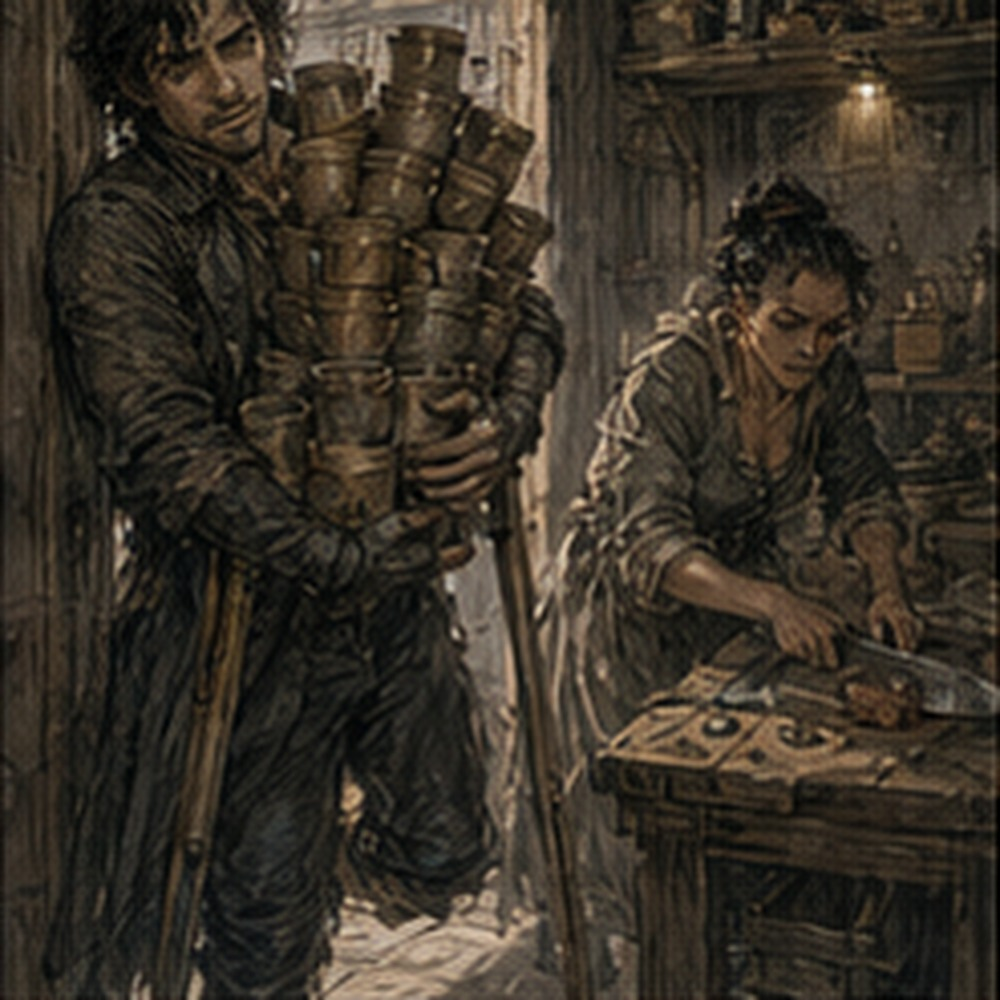
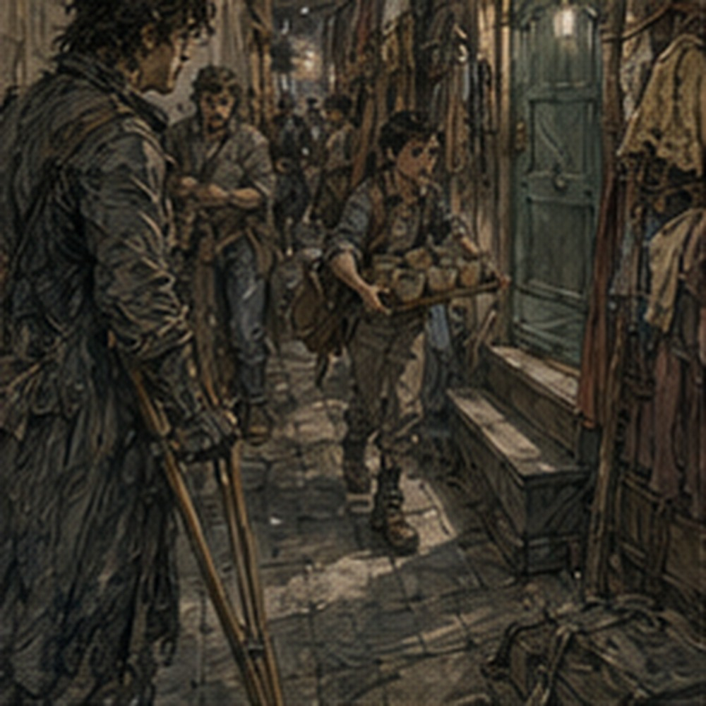
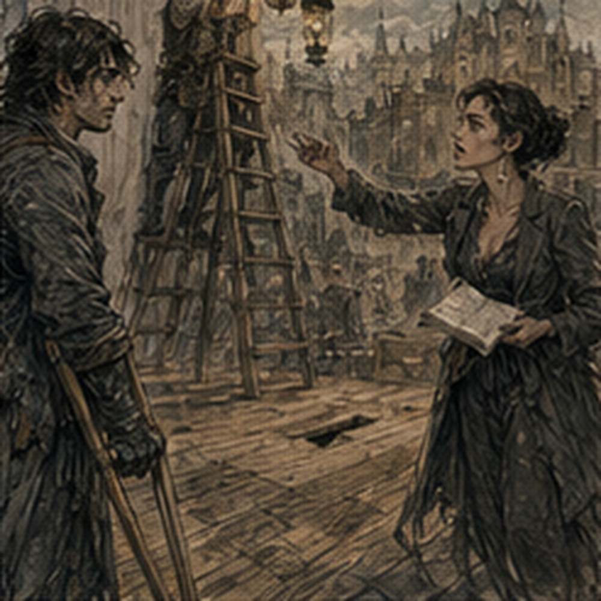

The kitchen was not a kitchen. It had once been. There was a hearth, a blackened chimney, a long scarred table, and shelves built into one wall. There was also no food, no cook, and no reason for twelve wooden cups to be there. I stood in the doorway holding them.
A local woman was on her knees beneath the table tightening something with a short iron tool.
"Cups?"
She did not look up.
"Washroom."
"I was told kitchen."
"This used to be kitchen."
"Then why call it kitchen?"
She stopped tightening. I waited. She looked out from beneath the table.
"Because that's what it's called."
Fine.
"Where is the washroom?"
"Past green room. Left. Down."
"Down?"
"Three."
Of course. I carried the cups. The corridor behind the stage formed a shape that made sense only if the building had been constructed in several arguments. The old kitchen sat behind the house wall. A narrow passage ran from it toward the stage, widened suddenly around a door marked with faded green paint, then narrowed again before reaching three steps down to a stone-floored room with a pump and two basins. The green room was not green. I checked. Brown walls. One yellow chair. Two benches.
A cracked mirror. Someone had written LIAR into the plaster beside the mirror.
Below it, in smaller writing:
WHICH ONE?
I liked this building. The washroom contained a boy washing cups. Not ours. Different cups. He looked at mine.
"Those clean?"
"I don't know."
He took one. Smelled it.
"Wine."
"I didn't put wine in it."
"I didn't say you did."
He dumped all twelve into a basin. My job ended. I remained. The boy looked at me.
"What?"
"Nothing."
"Then move."
Right. I moved. Backstage had become more crowded while I was gone. The long wooden box was now standing upright against a wall. Davin had won. Or lost differently. Two local workers were arguing beside it.
"Can't stay there."
"Not staying."
"It is there."
"For now."
"Now is when I need the wall."
"What for?"
"Wall."
I passed them. Neither noticed me. Onstage, a man stood on a ladder adjusting a lamp bracket while the ledger woman shouted numbers from the house.
"Two left."
"Your left?"
"Stage left."
"I'm not on stage."
"Then mine."
He moved the bracket.
"No."
He moved it back.
"Too far."
He looked down.
"You said two."
"I said two before you moved four."
"I moved two."
"You moved four."
"I know my hand."
"You don't know inches."
This continued. I stopped near the wing. The loose floorboard was still there. Someone had put a chalk X on it. Good. Not my problem. A local worker came behind me carrying a bench.
"Move."
I moved. Another carried the other end. They set it near the wing.
"No," the ledger woman called.
Both men stopped.
"House."
One said, "You said stage."
"I said spare to stage, cracked to house."
"This is spare."
"That is cracked."
The man looked at the bench. He pressed one hand against it. The seat shifted.
"Cracked."
They picked it up again. I moved farther out of the way. This was harder than work. I found Pell in a dressing room. Not deliberately. I was looking for somewhere to put my bag. The dressing room had six pegs, three mirrors, two stools, and clothing on every available surface. Pell stood with his back to the door, sewing the gray coat Marek had worn that morning. I stopped.
"You said that wasn't his."
Pell looked over his shoulder.
"It wasn't."
"Now it is?"
"No."
He went back to sewing. I looked at the coat. Same gray. Different coat. Fine.
"Can I put my bag here?"
"No."
"Why?"
"Women's room."
"There are no women."
"There will be."
"Where is men's?"
"Other side."
"Which other side?"
Pell pointed with the needle. I followed. Before I left, I said, "Did Marek's meeting happen?"
"Yes."
"What happened?"
"Meeting."
I waited. Pell looked at me.
"Teren will tell you if it changes you."
"I hate that."
"I know."
I left. The men's dressing room was smaller. Four pegs. One mirror. One stool. Iven was asleep on the stool. His head rested against the wall.
"How?"
His eyes opened.
"What?"
"Never mind."
I hung my bag.
"Are we rehearsing?"
"Probably."
"When?"
He closed his eyes.
"Later."
I was beginning to understand why Teren liked him. I went back into the corridor. Someone shouted, "Hand!" I stopped. Nobody came.
"Hand!"
Louder. A local worker leaned through a doorway.
"You."
He pointed at me.
"Me?"
"Yes. Hand."
I looked at my hands.
"What?"
"Need one."
He disappeared. I followed because curiosity remained a disease. The room beyond was storage. Not a room. A cavity. Shelves reached almost to the ceiling. Props filled them without visible system: clay jugs, wooden fruit, metal plates, three crowns, a bird cage, rope, folded flags, a false beard on a jar, two shields, and an entire painted fish.
The local worker stood on a stool holding a crate above his head.
"Take."

I put one crutch against the wall.
"Both hands?"
"One."
"That crate needs two."
"Not crate."
He nodded toward a small wooden hand sticking out of it. Of course. I took the hand. He lowered the crate.
"Thanks."
I stared at the wooden hand.
"What now?"
"Third shelf."
"Which third?"
He pointed. I put it beside a ceramic chicken. He looked.
"No."
"You pointed there."
"Other third."
"There cannot be two third shelves."
He pointed across the room. I moved the hand.
"Why is there a hand?"
"Play."
"Which?"
He was already climbing back onto the stool.
"No idea."
I put it down. The wooden hand remained a hand. No destiny. Excellent. When I returned to the stage, Teren was there. Not available. There was a difference. He stood near the front with the hall owner, the agent, the ledger woman, and a local man holding a carpenter's square. Papers lay on the stage floor between them. The owner said, "That was the agreement." Teren said, "Eight years ago."
"The terms didn't expire."
"The company did."
"You are the company."
"I bought a name and three trunks."
"You bought obligations."
"I bought mildew."
The agent said something quieter. Teren rubbed his forehead. The ledger woman looked bored. The carpenter measured the edge of the stage. Nobody looked at me. I moved into the wing. Marek entered from the opposite side. Still in the gray coat. The cut on his jaw had been cleaned. He saw Teren. Stopped. The owner saw Marek. His expression changed. There. Something. Recognition? Dislike? I could not tell. Marek's posture changed too. Not much. He became straighter. Older. No. Not older. More expensive. That was stupid. Still true.
The owner said, "You." Marek smiled.
"Me."
Teren closed his eyes. The agent looked at the floor. Interesting. The owner said, "I was told you weren't with them." Marek spread his hands.
"I wasn't."
"You are now."
"Apparently."
Teren said, "This is not helping." Marek looked at him.
"You asked me to come."
"I asked you to stand there."
"I am standing."
"Quietly."
"Ah."
Marek became quiet. The owner looked at the gray coat. Then at Teren.
"You knew."
Teren said, "Last night."
"Knew what?" I whispered.
Someone beside me said, "Shh." I turned. Serra. She had returned without my noticing. The yellow-scarf woman was not with her. Serra wore different earrings. I had not noticed earrings before.
"You're back."
She looked at me.
"Apparently."
"Who was---"
She put one finger against my lips. Not gently.
"Shh."
I stopped. Onstage, the owner picked up one of the papers.
"I won't have this."
Teren said, "You already agreed to the performances."
"Under the old terms."
"Which you are trying to resurrect because you saw the name on the bills."
"You use the name."
"I own the name."
"Then you own the debt."
Teren's face went still. Debt. There. Not enough. The agent said, "Master Coln." Owner. Name. Coln. Good. Coln ignored him.
"You bring him into my hall wearing that coat."
Marek looked down at himself.
"I was told gray."
Teren turned.
"Marek."
"What?"
"Quiet."
"Right."
Serra's finger was still near my mouth. I moved my head away. She lowered her hand.
"What is happening?" I whispered.
"Old shit."
"What old shit?"
She looked at me.
"Old."
That was useless. Coln said, "Two shows. Half gate against balance." Teren laughed.
"No."
"You want the hall?"
"Not at that price."
"You already brought the wagons."
"I can take them away."
Davin's voice came from behind us.
"No."

Everyone turned. Davin stood in the corridor with a coil of rope. Teren stared at him. Davin said, "Loaded wrong now." There was silence. Marek coughed into his hand. Serra looked down. I bit the inside of my cheek. Teren said, "Thank you, Davin." Davin nodded and left. Coln did not understand why this was funny. That made it better. Teren looked back at him.
"Not half gate."
Coln named a lower fraction. Teren named another. They argued. Numbers. Old balance. Use of hall. Damage deposit. Lamp oil. Bench rental, despite Teren's earlier claim that we brought half the seats. We apparently did. Not enough. The old terms began to become visible. Not one thing. A pile.
Some previous version of the troupe had performed here under an arrangement involving a debt, gate share, hall expenses, and apparently Marek. Marek remained standing quietly. Almost. At one point Coln said, "And he does not go upstairs." Marek said, "That was one time." Teren turned. Marek raised both hands. Quiet. I looked at Serra. She whispered, "Door." I stared at her. She smiled. Marek's cut. No. Different door. Probably. I did not ask. Eventually Teren and Coln moved into the house with the agent. The ledger woman followed.
The carpenter did not. He remained onstage measuring. Marek relaxed. Immediately. His shoulders dropped. He looked like Marek again. Serra walked out.
"Marek."
He looked at her. She pointed at the coat.
"Off."
"Why?"
"Not yours."
"I know."
"Then off."
He started unbuttoning it. I approached.
"What was that?"
Marek looked at me.
"Meeting."
"I know."
He removed the coat. Underneath, his shirt was wrinkled.
"What debt?"
"Old."
"Yes. Everyone says that."
"Because it is."
"Yours?"
He looked at Serra. Serra said, "Don't." Not to me. To him. Marek stopped. Interesting.
"Fine," I said.
Marek handed Serra the coat. She inspected the sleeve.
"Pell fixed this?"
"Yes."
"Badly."
"Tell him."
"I will."
She left. Marek watched her go. I watched him.
"Who was the woman in the yellow scarf?"
He looked at me.
"What woman?"
Good. He genuinely did not know.
"Never mind."
Teren returned ten minutes later. He walked directly past me.
"Teren."
"No."
"I only---"
"No."
He pointed at the stage.
"Shopkeeper."
"What?"
"Shopkeeper. Fifteen minutes."
"Meren?"
"Not here."
"Is he coming?"
"No idea."
"Clerk?"
"Dead."
"I know the third show is dead."
"No. Clerk dead."
"The scene?"
"Yes."
"Why?"
"No permit desk."
"That is not a reason."
"It is today."
He was already walking away.
"Teren."
He turned. I had one useful question.
"Do I use the market version?"
"Mostly."
"Mostly what?"
"Don't threaten the front row."
Then he left. Three seconds. Maybe four. Fine. I found Iven. He was awake. Again concerning.
"You're debtor."
"Yes."
"Fifteen minutes."
"I know."
"How?"
"Teren told me."
"When?"
"While you were watching the adults fight."
I stared.
"You were there?"
"No."
Of course. We rehearsed Shopkeeper. Not the whole scene. Entrances first. This stage had actual wings, but the right wing was shallow enough that my crutches could be visible if I waited where I normally would. A local stage worker named nothing-to-me pointed.
"Back."
"I need room."
"Back."
"If I go farther back, I can't see the cue."
"You don't need to see."
"I need to hear?"
He pointed upward. A narrow opening in the wall carried sound from the stage strangely well. I stood behind it. Iven spoke from center. Clear.
"Oh."
The worker had already left. Fine. We tried the entrance. The stage floor flexed in different places. The chalked loose board was avoided by everyone without discussion. My crutch tip slipped once on a patch of old paint. I stopped. Tested. Dry. Smooth. I adjusted. Iven waited.
"Good?"
"Yes."
"Again?"
"Yes."
We went back. Second entrance better. The scene itself was worse. Not terrible. Flat. I knew the lines. Iven knew the lines. We both knew where the laughs had been at East Market Hall. That was the problem. I could feel them sitting there like furniture. Eleven days. Floor. Double. Almost stand. Consultation. Every line had a memory attached. The empty hall did not care. Iven said, "You are doing the thing."
"What thing?"
"The face."
"What face?"
"Thinking."
"I am always thinking."
"Bad for you."
We started again. Halfway through, someone rolled the long wooden box behind the curtain. It made a scraping sound. I stopped. Iven did not.
"You've had eleven days to improve it," I said.

He answered. The box scraped again. I looked toward the wing. Iven snapped his fingers.
"Here."
"I am here."
"No."
We continued. The scene improved slightly when I became irritated with him. Useful. Not profound. Afterward, Iven said, "Fine."
"Everyone says fine here."
"Fine."
He left. I stood onstage. The house was still mostly empty. A few local workers placed benches. The carpenter was now on his knees near the front edge marking something. I looked up. The ceiling beams were old. Not municipal-hall old. Still interesting.
One central truss had been reinforced with newer timber on only one side. I stared. Why one side? Load? Repair? Water damage? The carpenter looked up.
"You."
"Yes?"
"Off."
"What?"
"Need stage."
Right. I left. Present. Irrelevant. The old kitchen had become a real kitchen again somehow. Not through architecture. Through food. Someone had brought bread, cheese, onions, and a pot from somewhere. The woman who had been under the table now stood cutting bread. I entered. She pointed.
"Cups."
"I delivered them."
"Where?"
"Washroom."
She stared.
"You told me washroom."
"I told you washroom to wash them."
"Yes."
"Then bring them back."
I closed my eyes. Of course. I went down the three steps. The boy had washed them. Good. I carried them back. The woman put them on the table.
"Thanks."
"What is your name?"
"Edda."
"Greg."
"I know."
"Why?"
She pointed at my leg. I looked down.
"That is fair."
She handed me bread.
"Eat."
I ate.
"Do you work here?"
"Yes."
"What do you do?"
"Today?"
"Yes."
She looked around the old kitchen.
"Bread."
That was an excellent answer. I ate more. Through the doorway, people crossed the corridor. Pell carrying gray cloth. A local worker with a ladder. Davin with rope. Iven with nothing. Marek without the coat. Serra passed once with the yellow-scarf woman. I saw only the woman's back this time. They were talking quickly. Serra did not look in. Teren crossed in the other direction with Coln. Still arguing. Nobody came to explain anything. Good. Edda cut onions. I said, "Where is the municipal hall?"
She pointed with the knife.
"North square."
"How far?"
"Ten minutes."
"Which direction is north?"
She looked at me. I had deserved that.
"From here."
"Front door, left. Fountain, right. Up hill. Big ugly building."
"Twice-rebuilt roof?"
She stopped cutting.
"You're interested in the roof?"
"Yes."
"Why?"
"Load paths."
She stared.
"Actor?"
"Apparently."
She went back to onions.
"Big ugly building."
I smiled. Ten minutes. Close. I could go. Not now. Teren appeared in the doorway.
"Greg."
I swallowed bread.
"Yes."
"Five."
"Five what?"
"Minutes."
"For?"
"Shopkeeper."
"I thought fifteen."
"That was ten minutes ago."
It had not felt like ten minutes. I put the bread down. Edda handed it back.
"For after."
I took it. Teren was already gone. I followed. The stage was ready enough to rehearse. Not ready. Enough. Serra had returned. She stood in the wing adjusting one earring. I looked at her. She looked at me.
"What?"
"Nothing."
"Good."
Then she stepped onto the stage and became the Princess. Someone called for the King. Marek answered from somewhere upstairs. Coln shouted, "No." Marek shouted back, "I'm changing." Coln said something I could not hear. Serra closed her eyes. Teren shouted, "Marek!"
"I know!"
The hall had known them before I arrived. That was becoming obvious. I had no idea what had happened here eight years ago. I had no idea who the woman in the yellow scarf was. I did not know why Nessa and Rinna were coming later, what was inside the long box, whether Meren would arrive, or what exactly Teren had agreed to with Coln. I did know my entrance. Mostly. I put the bread in my pocket. Iven took his place. Teren pointed at me.
"Shopkeeper."
Three seconds. Enough. I went to work.